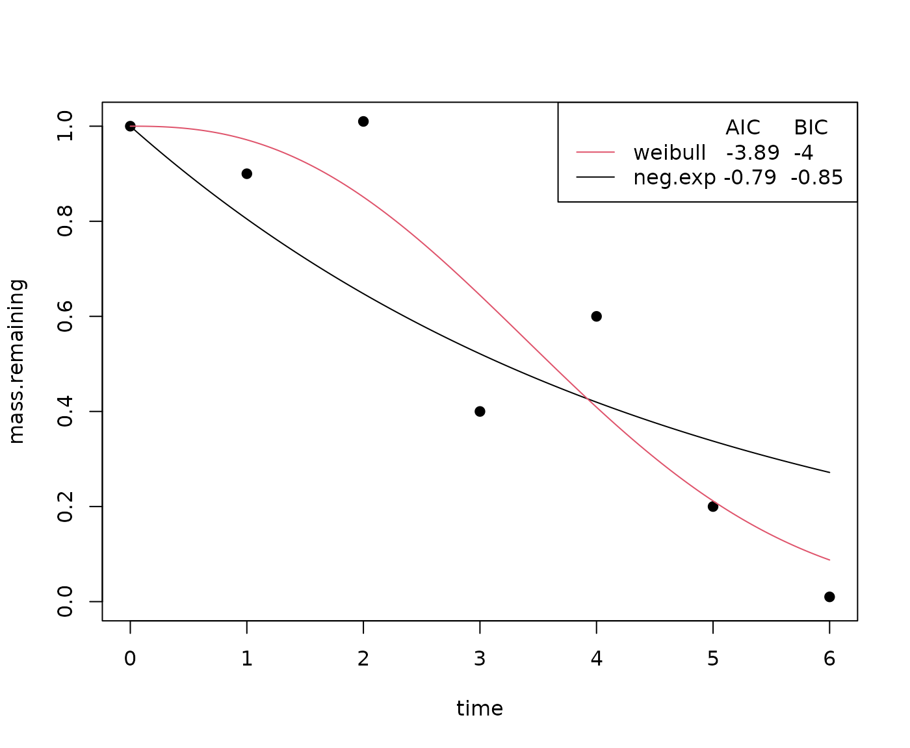
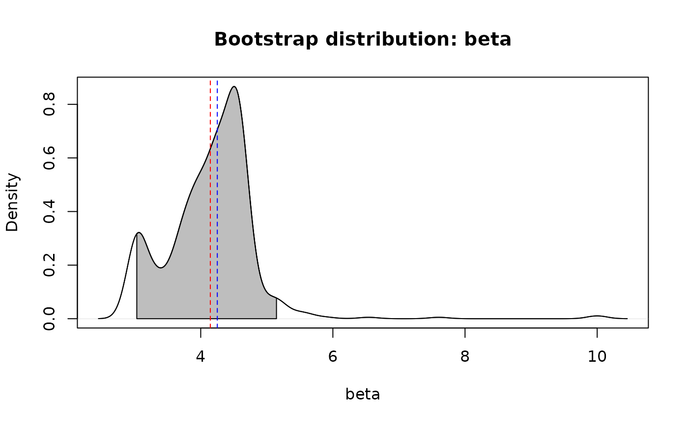
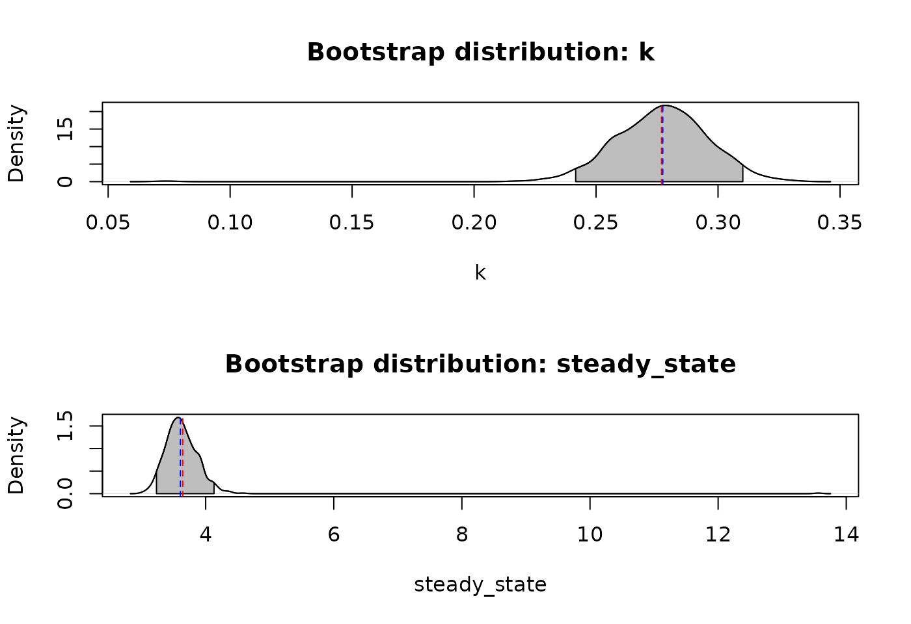
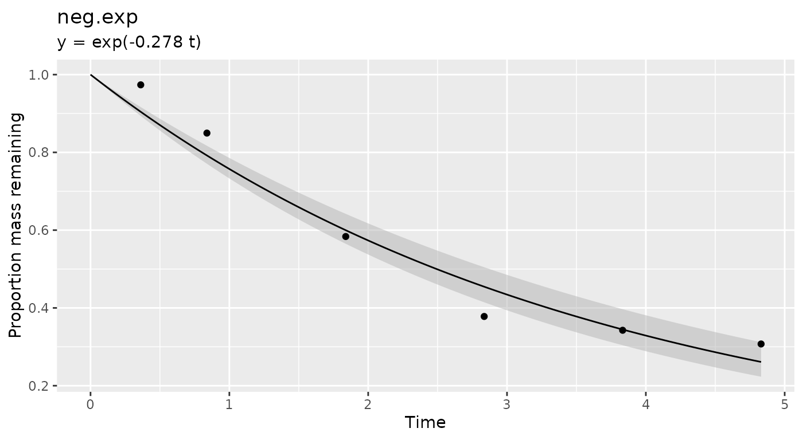

This vignette provides an overview of the main functions in
litterfitter
Getting started
The key function is fit_litter, which can fit 6
different types of decomposition trajectories: neg.exp,
weibull, discrete.parallel,
discrete.series, cont.quality and
neg.exp.limit (see ?fit_litter). The fitted
object is a litfit object
fit <- fit_litter(
time = c(0, 1, 2, 3, 4, 5, 6),
mass.remaining = c(1, 0.9, 1.01, 0.4, 0.6, 0.2, 0.01),
model = "weibull",
iters = 500
)
class(fit)You can visually compare the fits of different non-linear equations
with the plot_multiple_fits function:
plot_multiple_fits(
time = c(0, 1, 2, 3, 4, 5, 6),
mass.remaining = c(1, 0.9, 1.01, 0.4, 0.6, 0.2, 0.01),
model = c("neg.exp", "weibull"),
iters = 500
)
Calling plot on a litfit object will show
you the data, the curve fit, and even the equation, with the estimated
coefficients:
plot(fit)The summary of a litfit object will show you some of the
summary statistics for the fit.
#> Summary of litFit object
#> Model type: weibull
#> Number of observations: 7
#> Parameter fit (beta): 4.19
#> Parameter fit (alpha): 2.47
#> Time to 50% mass loss: 3.61
#> Implied steady state litter mass: 3.71 in units of yearly input
#> AIC: -3.8883
#> AICc: -0.8883
#> BIC: -3.9965From the litfit object you can then see the uncertainty
in the parameter estimate by bootstrapping
post <- bootstrap_parameters(fit, nboot = 500)
plot(post)
and summarise the bootstrap distribution of each parameter (and of the implied steady state) as a mean with quantiles:
summary(post)
#> mean 2.5% 50% 97.5%
#> beta 4.145287 3.026793 4.250955 5.150702
#> alpha 4.236101 1.109011 2.653679 10.000000
#> steady_state 3.801138 2.873050 3.790378 4.900035Working with fitted models
Printing a litfit object gives the fitted parameters and
information criteria, and the standard extractor functions work as you
would expect:
fit
#> litfit object: model weibull fit to 7 observations
#> Parameters:
#> beta alpha
#> 4.185 2.471
#> logLik: 3.944 AIC: -3.888 AICc: -0.888 BIC: -3.997
coef(fit)
#> beta alpha
#> 4.185250 2.470686
residuals(fit)
#> [1] 0.00000000 -0.07131745 0.15897526 -0.24450225 0.19105538 -0.01185021
#> [7] -0.07760268
predict(fit, newdata = c(7, 8, 9))
#> [1] 0.028335593 0.007037663 0.001319326Two quantities that are often of ecological interest can be derived from any fit: the time until a given proportion of mass remains, and the implied steady-state litter mass (in units of yearly input):
time_to_prop_mass_remaining(fit, threshold.mass = 0.5)
#> [1] 3.608246
steady_state(fit)
#> weibull
#> 3.712382Comparing models
fit_litter_all() fits several models to the same data
and returns them together. glance() then gives a
model-comparison table, sorted by AICc, with the difference from the
best model (delta_AICc). Here we use the
pineneedles data that ships with the package:
data(pineneedles)
fits <- fit_litter_all(
time = pineneedles$Year,
mass.remaining = pineneedles$Mass.remaining,
models = c("neg.exp", "weibull", "discrete.parallel", "cont.quality"),
iters = 500
)
fits
#> litfit_list: 4 models fit to 6 observations
#>
#> model nparams logLik AICc delta_AICc
#> neg.exp 1 9.197 -15.395 0.000
#> weibull 2 9.459 -10.918 4.477
#> cont.quality 2 9.192 -10.385 5.010
#> discrete.parallel 3 9.227 -0.454 14.940
glance(fits)[, c("fit", "nparams", "logLik", "AICc", "delta_AICc", "time_to_50")]
#> fit nparams logLik AICc delta_AICc time_to_50
#> 1 neg.exp 1 9.197395 -15.3947904 0.000000 2.493138
#> 2 weibull 2 9.458945 -10.9178902 4.476900 2.517099
#> 3 cont.quality 2 9.192424 -10.3848483 5.009942 2.485853
#> 4 discrete.parallel 3 9.227192 -0.4543834 14.940407 2.467509Because litfit objects have a logLik
method, the base R functions AIC() and BIC()
also work, e.g. AIC(fits$neg.exp, fits$weibull).
tidy(fits) gives the parameter estimates of every model in
one table.
Note that with only a handful of observations the more complex models are often poorly identified; see Cornwell & Weedon (2013) for a discussion.
Tidy output and custom plots
tidy(), glance() and augment()
return fits as data frames, following the conventions of the broom package.
augment() with newdata gives predictions on a
grid of times, and with a bootstrap it adds a pointwise uncertainty band
(.lower, .upper):
best <- fits$neg.exp
boot <- bootstrap_parameters(best, nboot = 500)
tidy(best, boot = boot)
#> term estimate std.error conf.low conf.high
#> 1 k 0.278022 0.02032293 0.2411624 0.3105982
grid <- augment(best, newdata = seq(0, 5, length.out = 100), boot = boot)
head(grid)
#> time .fitted .lower .upper
#> 1 0.00000000 1.0000000 1.0000000 1.0000000
#> 2 0.05050505 0.9860566 0.9844356 0.9878940
#> 3 0.10101010 0.9723076 0.9691135 0.9759345
#> 4 0.15151515 0.9587504 0.9540298 0.9641198
#> 5 0.20202020 0.9453821 0.9391809 0.9524481
#> 6 0.25252525 0.9322003 0.9245632 0.9409177These data frames make it straightforward to build your own figures, for example with ggplot2:
library(ggplot2)
ggplot(grid, aes(time)) +
geom_ribbon(aes(ymin = .lower, ymax = .upper), fill = "grey85") +
geom_line(aes(y = .fitted)) +
geom_point(data = augment(best), aes(y = mass)) +
labs(x = "Time (years)", y = "Proportion mass remaining")
To compare the curves of several models, use augment()
on the litfit_list, which stacks the predictions with a
fit column to map to colour:
curves <- augment(fits, newdata = seq(0, 5, length.out = 100))
ggplot(curves, aes(time, .fitted, colour = fit)) +
geom_line() +
geom_point(data = augment(best), aes(y = mass), colour = "black") +
labs(x = "Time (years)", y = "Proportion mass remaining", colour = "Model")